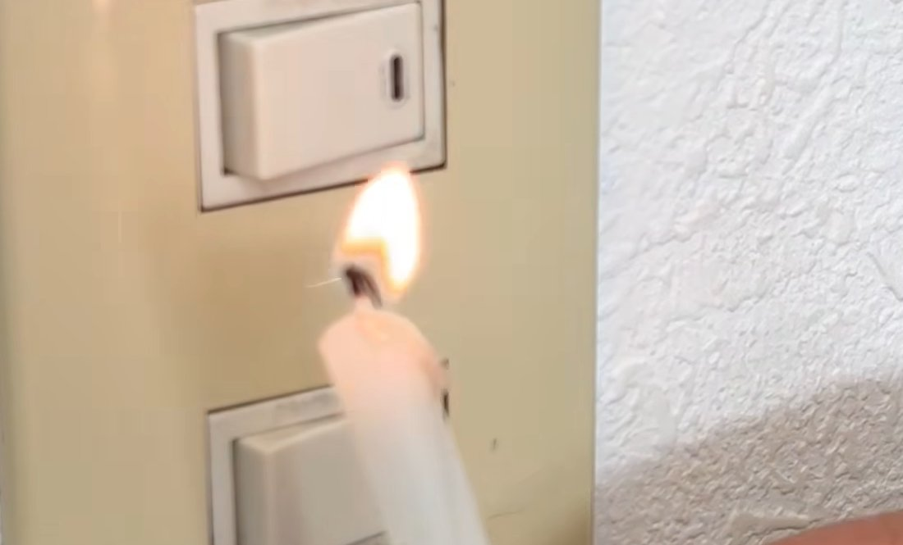
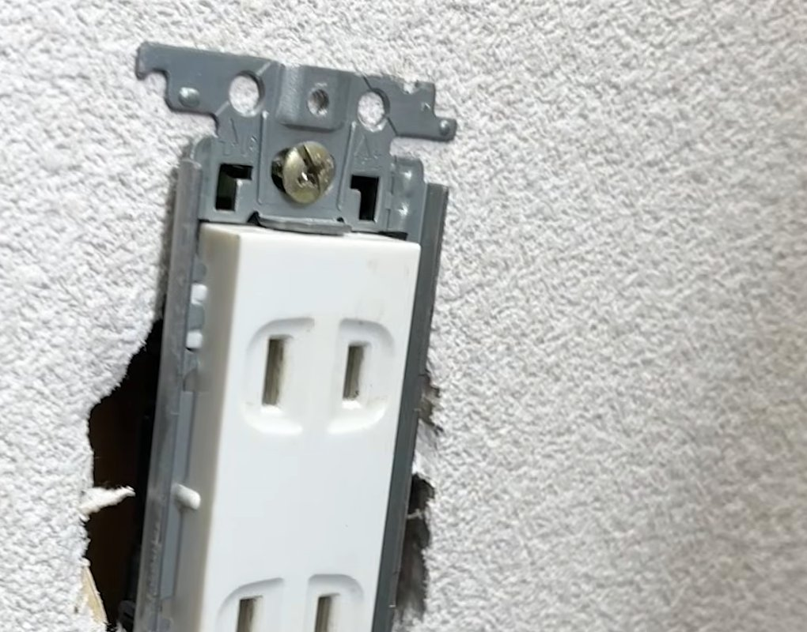
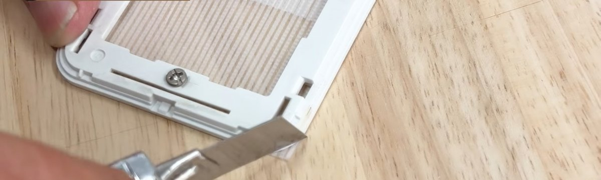
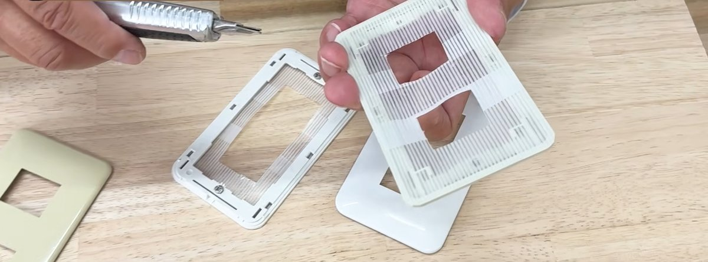
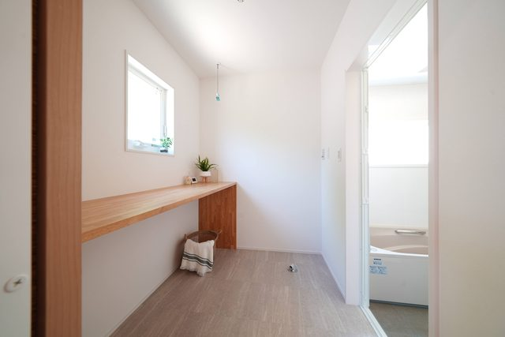
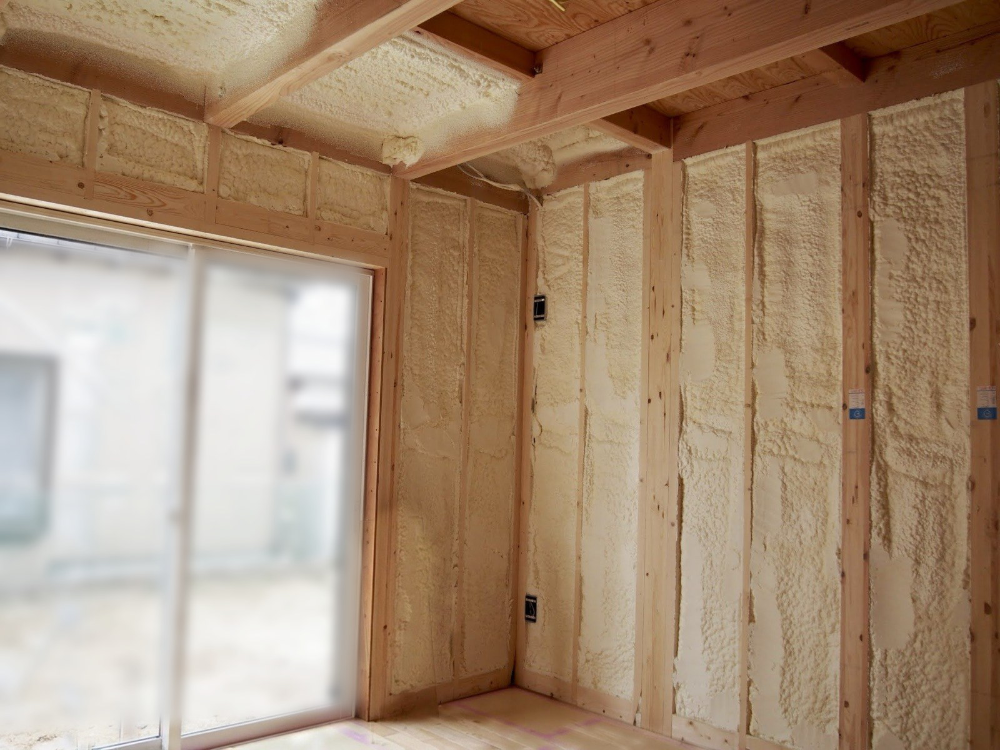

エアコンをつけても足元が冷える家では、コンセントとスイッチから冷たい風が入っていることがあります。
社長が、養生テープとカッターナイフとドライバーだけで止める手順を動画で見せています。
業者を呼ばずに、その日のうちにできる作業です。
すきま風は、コンセントとスイッチから入る
換気扇を回すと、家の中の空気が外に出て、出た分の空気がどこかから入ってきます。
給気口から入る分のほかに、壁のすき間からも入ります。
そのひとつが、コンセントとスイッチのカバーのまわりです。

炎がスイッチのほうへ傾き、風が入っているのがわかります。
カバーを外すと、壁の穴と器具の間にすき間があります。
この穴は壁の中の空間につながっているので、冷えた空気がここから部屋に出てきます。

器具の左右と下に、壁の穴のすき間が見えています。
用意するもの
動画では、粘着の強いものを選ぶように話しています。
手順
その下の枠は、プラスドライバーで外します
テープを少しずつ重ねて貼ります
カッターナイフで形に沿って切ります
ねじの穴の所を切り抜きます


スイッチが出る所を切り抜き、ねじの穴も開けてあります。
テープがきれいに切れなかった所は、市販のすき間テープをカバーのまわりに貼ると埋まります。
中のコンセントの器具や電線には触らないでください。器具を外す作業は、電気工事士の資格が要る工事です。
ろうそくを使うときは、カーテンや紙から離してください。
貼ったあとは、炎が揺れなくなった
テープを貼ったあと、もう一度換気扇を回して、ろうそくを近づけています。
貼る前は傾いていた炎が、ほとんど揺れなくなりました。
コンセントは、床に近い高さにあります。
社長は、壁にもたれて座ると腰のあたりに冷たい風が当たる、と話しています。
足元が冷える原因が、コンセントのすきま風だったということもあります。
カバー1枚に使うテープは30cmほどです。
25mの養生テープが1巻あれば、家にあるコンセントとスイッチのほとんどに貼れます。
社長は、1日に1つずつでよいので、丁寧に貼ってほしいと話しています。

寒くない家の条件奈良の底冷えと、断熱・気密の数字の見方です。
これから建てる家は、すき間を作らない
テープで止められるのは、今あるすき間です。
これから建てる家なら、壁の中のすき間そのものを少なくできます。
すき間の量は、C値という数字で表します。
C値は図面では出せないので、家ができてから測ります。
シバサンホームでは、壁と屋根の中を吹付けのウレタンで埋めていて、C値は実測の平均で0.2〜0.5です（NEST・ARCH）。

標準の性能を見る断熱等級6・C値の実測値など、標準で入るものの一覧です。
よくある質問
コンセントのカバーは、自分で外してもよいですか？
表のカバー（プレート）を外して付け直すだけなら、資格は要りません。
中のコンセントの器具を外したり、電線に触ったりする作業は、電気工事士の資格が要る工事です。
カバーの内側には触らないでください。
賃貸の部屋でもできますか？
テープを貼るのはカバーの裏側なので、壁には何も貼りません。
退去するときは、カバーを外してテープをはがせば元に戻ります。
壁にある換気の穴も、ふさいだほうがよいですか？
ふさがないでください。
壁の給気口は、換気のために外の空気を入れる穴です。
ふさぐと、家の中の空気が入れ替わらなくなります。
ふさぐのは、コンセントやスイッチのように、本来は空気が通らない所のすき間です。
まとめ
- コンセントとスイッチのまわりから、冷たい風が入ることがあります。
- ろうそくの炎を近づけると、すきま風の入る所がわかります。
- カバーの枠の裏に養生テープを貼れば、すきま風は止まります。
- 外すのはカバーと枠だけで、中の電線には触りません。
- 壁の給気口はふさがないでください。

奈良の工務店シバサンホームで、
土地さがし・資金計画・打合せの窓口をしています。
モットーはスピード・誠実さ・楽しさ。